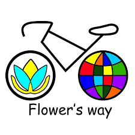

Supported by

In October 2014, we set off on a cycling trip around the world within the “Two-wheeled Chronicles” project. As we travel we record folk music from the peoples of the world, play it with the local musicians, tell people about Ukraine and sing our songs to them.
It makes us happy to share our discoveries: wonderful cultures, unusual places, international music, and stories of the people we meet along the way. Also we create music that we play on stages of many countries with our band Folknery.
During our meetings the listeners learn: how to travel independently and budget; how to travel with baby; how to make visas, get directions, work on the go; how to make dreams come true; why travel is the incredible stories, adventures, dating that everyone needs.
We are a family of three from Ukraine; we are travelers, musicians,
and artists. We started traveling 10 years ago, wanting to discover
the real world on our own and see everything for ourselves first-hand.
We also wanted to share our discoveries, so we created a project
called “Two-wheeled Chronicles” that combines culture and travel.
Our baby boy Marko was born during our journey; by the age of 2, he
had explored more than 8 different countries.
Since 2010 we’ve covered 35 countries and 50,000 km.